Case study ds/bmw · BMW Technology · 2018–2019
BMW's first internal design system
As lead designer for the BMW and MINI Android apps, I led the creation and implementation of a pattern library for both brands across Android and iOS — the first shared source of truth for a design team split between Chicago, Munich and China.
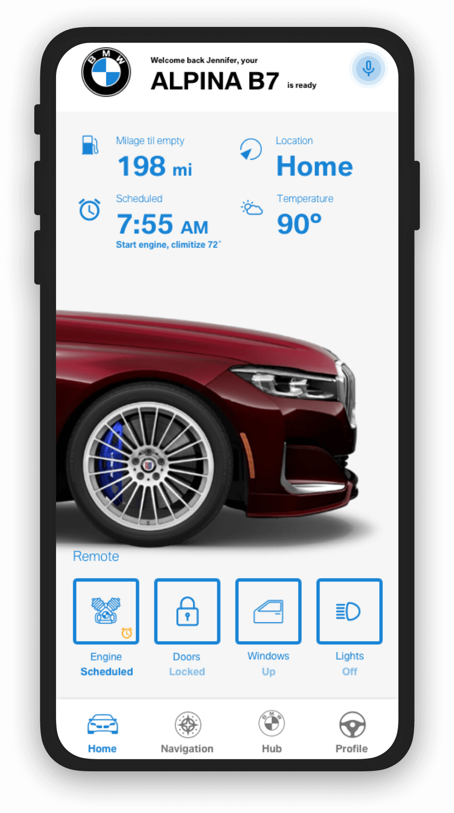
The problem
One app, owned in slices
BMW's applications were divided by verticals. Each vertical represented a different piece or flow of the app, and each was owned by a different team and a different designer. The result was a lot of inconsistency across the application, and no easy way to share files across our international teams. We needed a centralized repository that could serve as a pattern library for all of the applications.
BMW and MINI
At the beginning of my tenure there was a gap when the Android apps were frozen from front-end enhancements. That gave me a two-month window to create a pattern library for BMW and MINI that could be used across teams and platforms.
We had a style guide built in Sketch, but nothing in it was dynamic, and there were elements and components in production that it didn't represent at all.
Two brands, two platforms, three offices, one freeze window. The library had to be useful to everyone on day one or it would be ignored on day two.
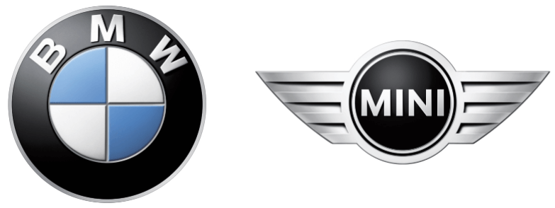
My audience
Twenty-four designers, four teams, four uses
The Chicago office had 12 designers, with another dozen at BMW headquarters in Munich. Because of strict company restrictions, BMW was behind in adopting newer tools like Sketch and InVision; the company had only just begun using them fully across product lanes.
At the time I was all about atomic design, and about teaching the methodology and how it could be applied to our application for the good of the brand. Atomic design builds systems of interfaces from a base of small parts, which allows for far greater flexibility and agility. To start, I held meetings with all of the designers in the Chicago office to learn our current processes and to get them involved in the interface inventory.
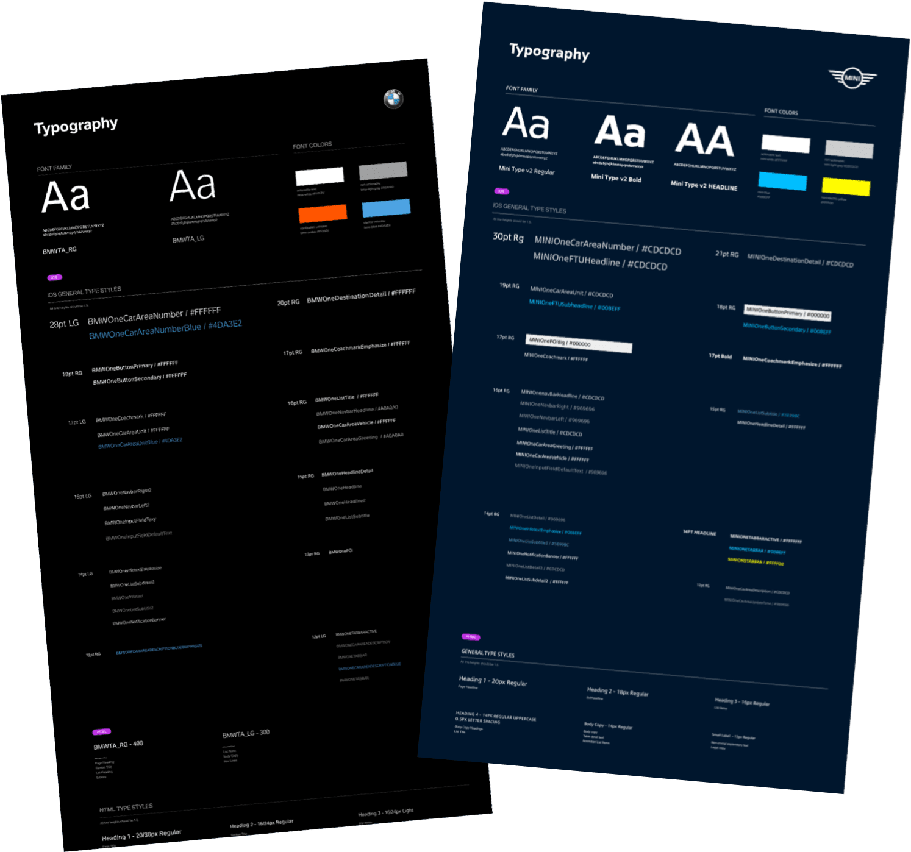
The new pattern library needed to meet the needs of several teams and serve several purposes at once:
Pattern library users
- Chicago team
- Munich team
- China team
- Agency partners
Pattern library uses
- Style guide
- Pattern library
- Documentation
- Spec sheet
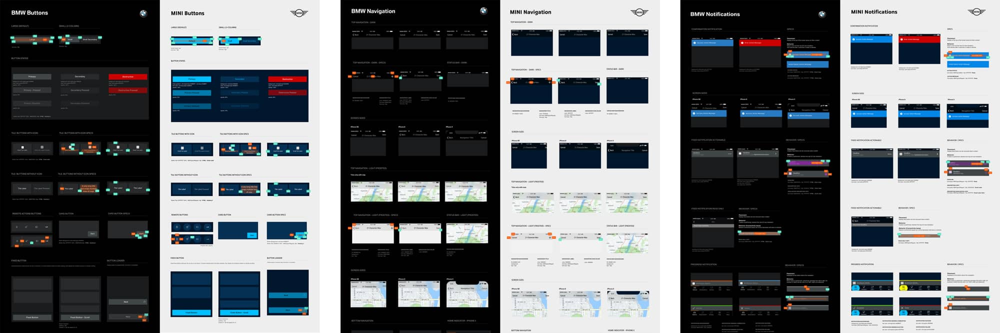
Opportunity
A scheduling flow full of forms
To start the redesign I needed a good entry point: something that would prove the case and show off what the new components could do. The perfect opportunity came when a teammate had to redesign BMW's scheduling service. It was a flow that used a lot of text fields and form elements, and one of the many verticals built in HTML. That made it a unique chance to redesign a core component with the right amount of dev support available.
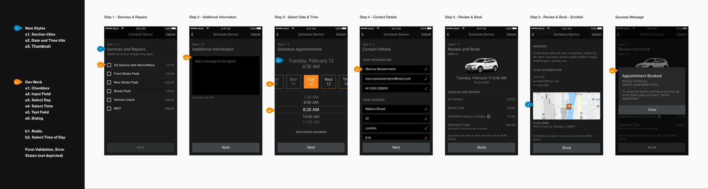
Material Design
Build on a framework I could sell
I started by rebuilding our forms, following specs from a framework I knew I could sell to my developers, fellow designers and upper management. I redesigned our form fields into three variations supported by Material Design.
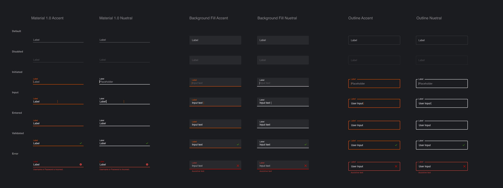
Forms were the obvious place to start, with a clear case for redesigning them cross-platform. With the release of Material 2.0 we had more options to build on components that had already been put through extensive testing and were continually improved by Google.
I presented my redesign options and was given permission to take the component further. To get it ready for production, the team wanted to see every state of the form field we would need. So I took our variant and made sure the new pattern worked for every instance and occurrence where we had form fields.
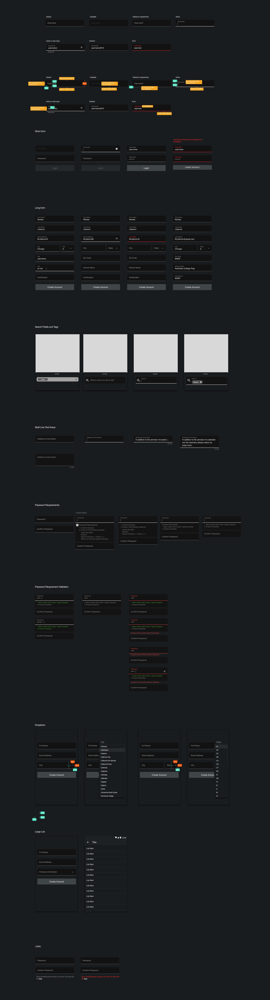
Development
Roll the standard out one component at a time
Coordinating with development became the biggest hurdle to pushing the standards forward. Not only did we have multiple code bases per platform, we also had third-party apps where we had no control over styling. Together with the developers we decided to roll changes out slowly, component by component, as each one met the new standard.
Whenever there was an opportunity to rebuild a component, I helped coordinate the release of the new pattern with the iOS and Android teams. Pretty soon the style guide would match reality.
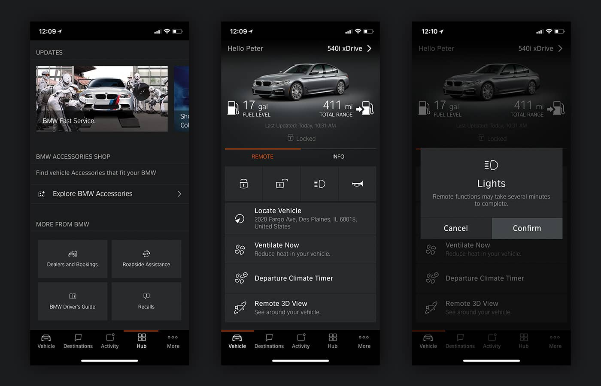
Library use
One component, three jobs
I got a lot of support from the other designers once I started sharing the full capabilities of components and smart objects. I built a hierarchy that could accommodate the three crucial ways our components were used:
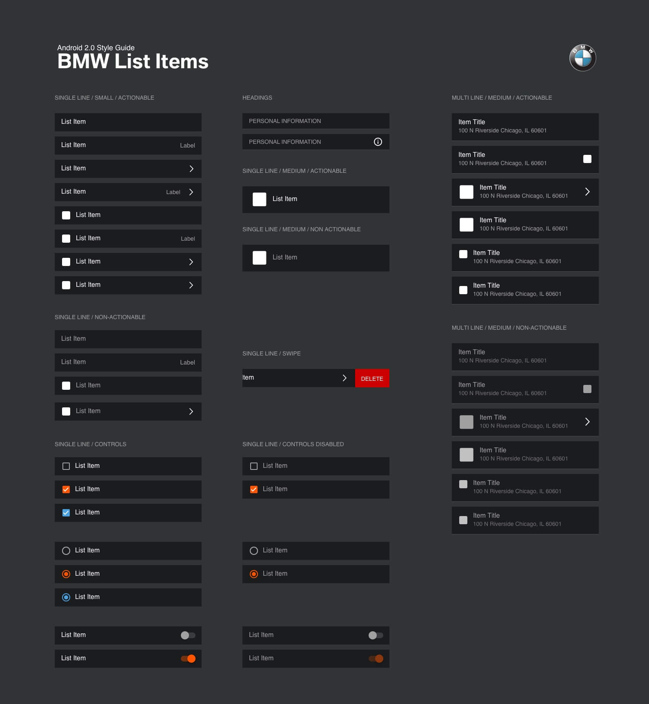
-
📐 Guides
For developers
A place to find the specs: measurements, spacing and behaviour for every component.
-
🛠 Layout
For UX
The ability to build wireframes with the latest pattern, without redrawing it.
-
😎 Style
For UI
A way to represent multiple steps and states from a single component.
Underneath those three sat the rest of the naming hierarchy — 🚦 State, ✏️ Title and 🐼 Icon — so every symbol in the file could be found by what it was, not by who had drawn it.
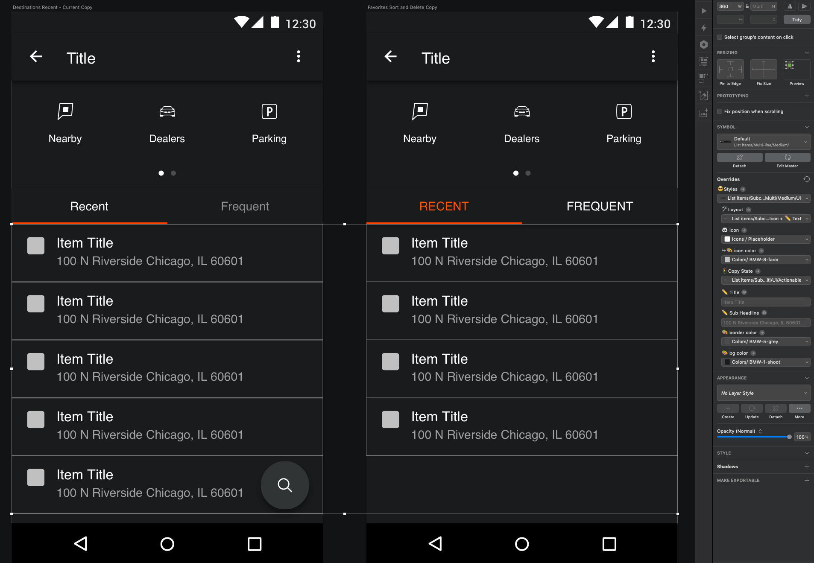
Cross-platform design
One file for Chicago, then for the world
For the first time we were all sharing an identical file across the Chicago office, and we were able to bring all of our features up to standard with the new library. The new challenge became sharing it with our international teams, in a company that heavily regulated any cloud service.
Sharing under regulation
To stay within the rules and still get the new files to the whole team, I opted to post everything on Confluence. It wasn't ideal, but it gave me a way to share and gather feedback from the international teams.
One of the new goals for the file was to serve as onboarding for new designers and for the agencies we might work with. I delivered a file that contained not only the style guide and pattern library, but every root page in the app, so anyone could get a full, high-level view of the product.
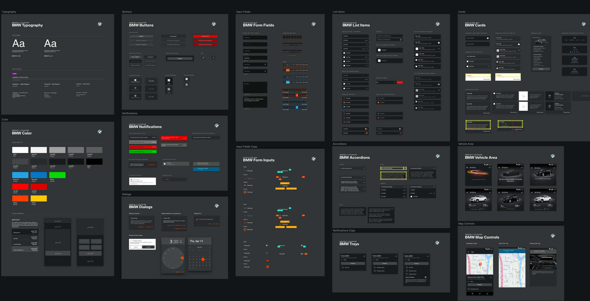
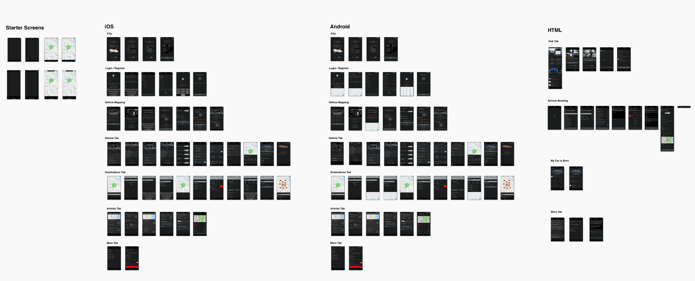
MINI, and UX fidelity
All of this work was replicated for the MINI brand. There was also a new need to serve our UX designers as well as UI, so I combined the libraries so that each element could be switched between UI and UX fidelity — giving the style guide even further use.
Reflection
The case for a dedicated role
This was a really fun project to work on, full of challenges and unique obstacles. And although the work proved its value to the team, it was quickly becoming deprecated, and by the end of the journey we realized it needed to be a specialized role. What I could give them was guidance and an awareness of the need for a library and for cross-platform consistency — something they began to plan for as part of a complete redesign.
Concept work
There was a lot of the BMW app we had no control over: the style, colour and icons of certain things were set in stone, and I disagreed with some of them. But at the end of the day the most fun was the concept work, and getting to really push the application.
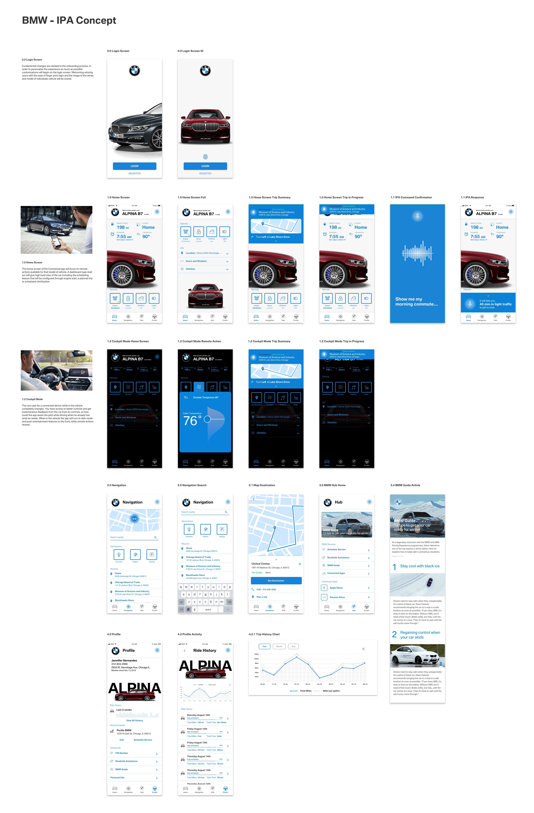